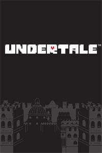

Undertale
| Desarrollador: | Toby Fox |
| Distribuidor: | Fangamer y 8-4 |
| Creador: | Toby Fox | Género: | Aventura |
| Lanzamiento: | 15 de septiembre de 2015 |
| Idiomas disponibles: | inglés y japonés Oficiales, de manera no oficial varios fans han creado parches de Idiomas |
| Plataformas Disponibles: | Microsoft Windows,OS X,Linux, PlayStation 4,PlayStation Vita,Nintendo Switch,Xbox One |
Descripción
Undertale es un videojuego de rol en 2D de 2015 creado por el desarrollador independiente estadounidense Toby Fox. El jugador controla a un niño que ha caído al subsuelo: una gran región aislada bajo la superficie de la Tierra, separada por una barrera mágica. El jugador se encuentra con varios monstruos durante su viaje de regreso a la superficie, aunque algunos monstruos pueden involucrar al jugador en una pelea. El sistema de combate involucra al jugador navegando a través de los ataques mini bullet hell por parte del oponente. Se puede optar por pacificar y salvar a los monstruos o someterlos para matarlos. Estas elecciones afectan el juego, el diálogo, los personajes y la historia cambiando según las elecciones tomadas previamente.
Ha sido aclamado por su material temático, sistema de combate intuitivo, partitura musical, originalidad, historia, diálogo y personajes. Además, vendió más de un millón de copias y fue nominado para múltiples elogios y premios. Varias publicaciones y convenciones de juegos incluyeron a Undertale como el juego del año, y desde entonces otros lo han incluido como uno de los mejores juegos de la década de 2010.
Sistema de juego
En el juego, los jugadores controlan a un niño y completan objetivos para avanzar en la historiaLos jugadores exploran un mundo subterráneo lleno de pueblos y cuevas donde deben resolver numerosos acertijos en su viaje. El mundo subterráneo es el hogar de monstruos, muchos de los cuales desafían al jugador en combate;los jugadores deciden si matarlos, huir o hacerse amigo de ellos.Las elecciones hechas por el jugador afectan radicalmente la trama y la progresión general del juego, con la moral del jugador actuando como la piedra angular para el desarrollo del juego. Cuando los jugadores se encuentran con enemigos en eventos con guiones o encuentros aleatorios, entran en modo de batalla. Durante las batallas, los jugadores controlan un pequeño corazón que representa su alma, y deben evitar los ataques desatados por el monstruo enemigo similar a un videojuego bullet hell.A medida que avanza el juego, se introducen nuevos elementos, como obstáculos de colores y batallas de jefes que cambian la forma en que los jugadores controlan el corazón.Los jugadores pueden optar por atacar al enemigo, lo que implica presionar los botones cronometrados. Matar enemigos hará que el jugador gane EXP (lo que a su vez aumenta su LOVE) y oro. Pueden usar la opción ACT para realizar diversas acciones, que varían según el enemigo. Si el jugador usa las acciones correctas para responder al enemigo, o los ataca hasta que tengan un HP bajo (pero aún con vida), pueden elegir perdonarlos y terminar la lucha sin matarlos. Para que algunos encuentros con jefes se completen pacíficamente, se requiere que el jugador sobreviva hasta que el personaje al que se enfrentan haya terminado su diálogo. El juego presenta múltiples ramas de historia y finales dependiendo de si los jugadores eligen matar o perdonar a sus enemigos; y como tal, es posible pasar el juego sin matar a un solo enemigo.